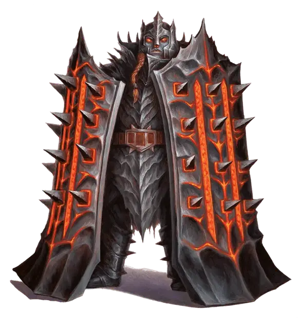

Дредноут огненный великан
Fire Giant Dreadnought
Огромный Великан (Огненный великан), законно-злой

Класс Доспеха 21 (латы, щиты)
Хиты 187 (15к12 + 90)
Скорость 30 футов
| мод | спас | ||
|---|---|---|---|
| СИЛ | 27 | +8 | +8 |
| ЛОВ | 9 | −1 | +4 |
| ТЕЛ | 23 | +6 | +11 |
| мод | спас | ||
|---|---|---|---|
| ИНТ | 8 | −1 | −1 |
| МДР | 10 | +0 | +0 |
| ХАР | 11 | +0 | +5 |
Навыки Атлетика +13, Восприятие +5
Иммунитет к урону огонь
Чувства пассивное Восприятие 15
Языки Великаний
Опасность 14 (11500 опыта)
Бонус мастерства +5
Среда обитания Горы, Подземье
Особенности
Двойные щиты. . Гигант носит два щита, каждый из которых учитывается в его КД. Гигант должен положить или бросить один из щитов, чтобы бросать камни.
Действия
Мультиатака. Гигант совершает две атаки огненным щитом.
Огненный щит. . Рукопашная атака оружием: +13 к попаданию, досягаемость 5 футов, одно существо. Попадание: Дробящий урон 22 (4к6 + 8) плюс огненный урон 7 (2к6) Колющий урон 7 (2к6).
Камень. . Дальнобойная атака оружием: +13 к попаданию, дистанция 60/240 футов, одна цель. Попадание: Дробящий урон 30(4к10+8).
Удар щитом с разбега. . Гигант передвигается на расстояние до 30 футов по прямой линии и может двигаться сквозь пространство любого существа, которое меньше Огромного. Когда он в первый раз попадает в пространство существа во время такого движения, он совершает атаку огненным щитом по этому существу. Если атака попадает, то цель также должна успешно пройти спасбросок Силы Сл 21 или гигант будет толкать её впереди себя во время остального перемещения. Если существо проваливает спасбросок на 5 очков и более, то оно сбито с ног и получает 18 (3к6+8) дробящего урона или 29 (6к6+8) дробящего урона, если оно уже было сбито с ног.
Описание
Уложение подчеркивает не только силу, но и кузнечное мастерство огненных гигантов. Литейный цех является сердцем сообщества огненных гигантов. Это храм, школа, испытательный полигон и политический центр совмещенные вместе.
Те, у кого много силы, но мало мозгов, обычно назначаются на самые низшие задания, такие как работа на кузнечных мехах или подкидывание угля. Однако, существует роль, на которую могут претендовать лишь сильнейшие и получить титул: дредноут.
Орудия войны. Дредноуты – это невероятно сильные огненные гиганты, которые используют два огромных щита, как плут клинки. На этих щитах снаружи находятся шипы, а внутри – пустоты, в которые дредноуты помещают горящие угли при первых признаках опасности. Вооруженный двумя щитами, дредноут представляет из себя огненную стену для любого нападающего. После боя с дредноутом от нападающего зачастую остается лишь дымящееся пятно на полу.
Не будучи на битве, дредноуты поддерживают физическую форму и используют щиты для копания огромного количества угля, камня или руды для литейного цеха. Иногда дредноутов призывают вышестоящие для сопровождения военной или дипломатической делегации. В любом случае, присутствие дредноутов создает устрашающее впечатление.
См. дополнительно статью: "Бестиарий: Великаны"